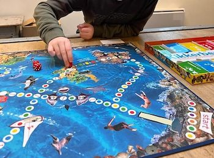

Sociale vaardigheidstraining
5 tot 12 jaar · in een groepje
Beter voor jezelf opkomen, makkelijker vriendjes maken en meer zelfvertrouwen. Speels, met kringgesprekken, oefeningen en rollenspellen.
€ 350 · 10-12 keerMeer info